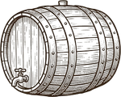

Deux hectares et une charrette
Un journalier de Wormeldange achète 2,1 hectares de coteau que personne ne veut travailler : trop raide, trop caillouteux, trop loin du village. Le vin part en fûts vers Trèves, sans étiquette et sans nom.

Un journalier de Wormeldange achète 2,1 hectares de coteau que personne ne veut travailler : trop raide, trop caillouteux, trop loin du village. Le vin part en fûts vers Trèves, sans étiquette et sans nom.
Le puceron vide le bord de l'eau en trois ans. On replante greffé, et pour la première fois on choisit : le Riesling monte sur la roche, l'Elbling descend vers la rive.
Au retour de la guerre, deux tiers des ceps sont morts et les murets se sont effondrés dans la pente. Onze ans de pioche, les pierres remontées une par une.
Toute la commune apporte sa récolte à la cave coopérative. Marthe Weimerskirch dit non, met la première bouteille en cave sous son nom en 1968, et passe dix ans à la vendre porte à porte. C'est la décision qui a fait le domaine.
Vendanges vertes, taille courte, tri à la vigne : les rendements passent de 85 à 44 hectolitres. Trois clients historiques claquent la porte ; trente autres arrivent.
Conversion certifiée en trois ans, sans un mot sur l'étiquette. Puis 2,8 hectares plantés sur le plateau, à 268 mètres — pour un climat qui n'existe pas encore.
Le carnet de cave
Personne n'y croyait fin août. Quatre semaines sèches avec des nuits à 8 °C ont tout rattrapé : les chiffres de 2013, en plus mûr. En foudre, mise prévue en juin 2026.
Les jeunes vignes du plateau ont souffert ; les ceps de 1962 n'ont rien senti, la racine était déjà à six mètres. Grand millésime de garde.
Mildiou en juin, tri impitoyable. Ce qui est rentré est droit et acide — le millésime que les sommeliers préfèrent.
Été sec, pluie exactement au bon moment le 12 septembre. Les Koeppchen 2015 sont encore fermés ; les ouvrir maintenant est un gâchis.
Année froide et minuscule. Tout le monde s'est trompé : neuf grammes d'acidité, une garde qui n'en finit pas.
La canicule. Raisins cuits, acidité absente. Gardé comme avertissement : c'est l'année qui a fait planter le plateau.

Vendangé en octobre plein, comme du temps de Marthe. Deux caisses dorment encore à onze mètres ; elles ne sont pas à vendre, mais on en ouvre parfois une pendant les visites.
« On ne vend pas la terre, on ne coupe pas les vieux ceps, on ne met pas en bouteille avant d'avoir goûté deux fois. »
Carnet de Marthe Weimerskirch, mars 1971. Il est dans la cave ; on peut le voir pendant la visite.